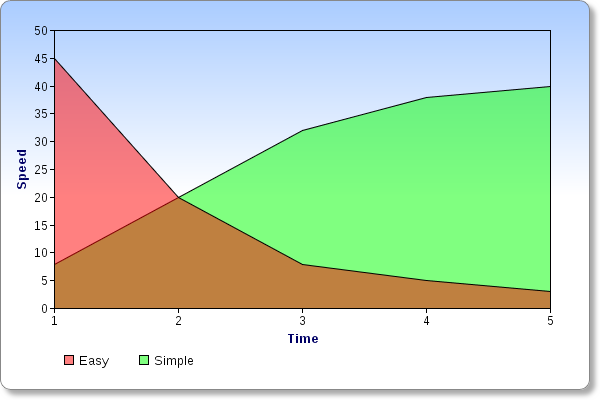

Simple design or easy design?
Jimmy Larsson - @jimlar
May 30:th 2012
Jimmy Larsson - @jimlar
May 30:th 2012
Simplicity is prerequisite for reliability

| Construct | Complicates/interleaves |
|---|---|
| State | Everything that touches it |
| Objects | State, identity and value |
| Methods | Function, state and namespaces |
| Inheritance | Types |
| Switch/matching | Multiple who/what pairs |
| Variables | Value and time |
| Imperative loop, fold | What and how |
| ORM | OMG! |
| Construct | Get it via |
|---|---|
| Values | final, persistent collections |
| Functions | static methods, FP langs |
| Data | Maps, arrays, sets... |
| Managed refs | Clojure/Haskell refs |
| Set functions | Libs |
| Queues | Libs |
| Declarative data manipulation | SQL, LINQ, Datalog |
| Rules | Libs, Prolog |
| Consistency | Transactions, values |
Simplicity is the ultimate sophistication
Jimmy Larsson - @jimlar